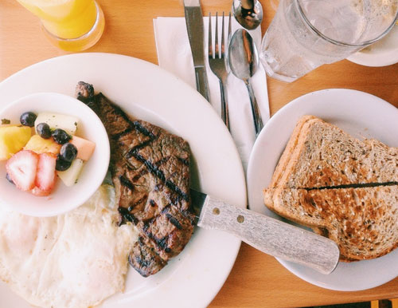

<!DOCTYPE html>
<!--[if lt IE 7]>      <html class="no-js lt-ie9 lt-ie8 lt-ie7"> <![endif]-->
<!--[if IE 7]>         <html class="no-js lt-ie9 lt-ie8"> <![endif]-->
<!--[if IE 8]>         <html class="no-js lt-ie9"> <![endif]-->
<!--[if gt IE 8]><!-->
<html class="no-js">
	<!--<![endif]-->

	<head>
		<meta charset="utf-8">
		<meta http-equiv="X-UA-Compatible" content="IE=edge">
		<title>相册</title>
		<meta name="viewport" content="width=device-width, initial-scale=1">
		<meta name="description" content="Free HTML5 Website Template by FreeHTML5.co" />
		<meta name="keywords" content="free html5, free template, free bootstrap, free website template, html5, css3, mobile first, responsive" />

		<!-- Facebook and Twitter integration -->
		<meta property="og:title" content="" />
		<meta property="og:image" content="" />
		<meta property="og:url" content="" />
		<meta property="og:site_name" content="" />
		<meta property="og:description" content="" />
		<meta name="twitter:title" content="" />
		<meta name="twitter:image" content="" />
		<meta name="twitter:url" content="" />
		<meta name="twitter:card" content="" />

		<!-- Place favicon.ico and apple-touch-icon.png in the root directory -->
		<link rel="shortcut icon" href="favicon.ico">

		<!-- Animate.css -->
		<link rel="stylesheet" href="css/css_basic/animate.css">
		<!-- Icomoon Icon Fonts-->
		<link rel="stylesheet" href="css/css_basic/icomoon.css">
		<!-- Bootstrap  -->
		<link rel="stylesheet" href="css/css_basic/bootstrap.css">
		<!-- Owl Carousel -->
		<link rel="stylesheet" href="css/css_basic/owl.carousel.min.css">
		<link rel="stylesheet" href="css/css_basic/owl.theme.default.min.css">
		<!-- Theme style  -->
		<link rel="stylesheet" href="css/css_basic/style.css">

		<!-- Modernizr JS -->
		<script src="js/js_basic/modernizr-2.6.2.min.js"></script>
		<!-- FOR IE9 below -->
		<!--[if lt IE 9]>
	<script src="js/respond.min.js"></script>
	<![endif]-->

	</head>

	<body>
		<div id="fh5co-page">
			<a href="#" class="js-fh5co-nav-toggle fh5co-nav-toggle"><i></i></a>
			<aside id="fh5co-aside" role="complementary" class="border js-fullheight">

				<h1 id="fh5co-logo"><a href="index.html"></a></h1>
				<nav id="fh5co-main-menu" role="navigation">
					<ul>
						<li class="fh5co-active">
							<a href="basic.html">Photos</a>
						</li>
						<li class="fh5co-active">
							<a href="index.html">Home</a>
						</li>
					</ul>
				</nav>

				<div class="fh5co-footer">
					<p>&copy; Happy NewYear.Made by Beeman_xia
						<a href="" title="beeman" target=""></a>.</p>

			</aside>
			

			<div id="fh5co-main">
				<div class="fh5co-gallery">

					<a class="gallery-item" href="flower.html">
						
						<span class="overlay">
						<h2>Flower</h2>
						<span>9 Photos</span>
						</span>
					</a>
					<a class="gallery-item" href="people.html">
						
						<span class="overlay">
						<h2>People</h2>
						<span>17 Photos</span>
						</span>
					</a>
					<a class="gallery-item" href="sky.html">
						
						<span class="overlay">
						<h2>Sky</h2>
						<span>5 Photos</span>
						</span>
					</a>
					<a class="gallery-item" href="building.html">
						
						<span class="overlay">
						<h2>Building</h2>
						<span>9 Photos</span>
						</span>
					</a>
					<a class="gallery-item" href="travel.html">
						
						<span class="overlay">
						<h2>Travel</h2>
						<span>9 Photos</span>
						</span>
					</a>

					<a class="gallery-item" href="family.html">
						
						<span class="overlay">
						<h2>Family</h2>
						<span>9 Photos</span>
						</span>
					</a>

					<a class="gallery-item" href="food.html">
						
						<span class="overlay">
						<h2>Food</h2>
						<span>9 Photos</span>
						</span>
					</a>
					<a class="gallery-item" href="cat.html">
						
						<span class="overlay">
						<h2>Cat</h2>
						<span>6 Photos</span>
						</span>
					</a>
					<a class="gallery-item" href="basic.html">
						
						<span class="overlay">
						<h2>Waitting...</h2>
						<span>...</span>
						</span>
					</a>
				</div>

				<div class="fh5co-counters" style="background-image: url(images/hero.jpg);" data-stellar-background-ratio="0.5" id="counter-animate">

				</div>

				<div class="fh5co-narrow-content">
					<div class="row">
						<div class="col-md-4 animate-box" data-animate-effect="fadeInLeft">
							<h1 class="fh5co-heading-colored">欢迎哟</h1>
						</div>
					</div>
					<div class="row">
						<div class="col-md-12 animate-box" data-animate-effect="fadeInLeft">
							<p class="fh5co-lead">大部分照片都放在这里了，由于备份工作没做仔细，还有一些照片找不回来了，如果在这里没找到你，那你一定是在我记忆深处。</p>
						</div>

					</div>
				</div>

			</div>
			</div>

			<!-- jQuery -->
			<script src="js/js_basic/jquery.min.js"></script>
			<!-- jQuery Easing -->
			<script src="js/js_basic/jquery.easing.1.3.js"></script>
			<!-- Bootstrap -->
			<script src="js/js_basic/bootstrap.min.js"></script>
			<!-- Carousel -->
			<script src="js/js_basic/owl.carousel.min.js"></script>
			<!-- Stellar -->
			<script src="js/js_basic/jquery.stellar.min.js"></script>
			<!-- Waypoints -->
			<script src="js/js_basic/jquery.waypoints.min.js"></script>
			<!-- Counters -->
			<script src="js/js_basic/jquery.countTo.js"></script>

			<!-- MAIN JS -->
			<script src="js/js_basic/main.js"></script>

	</body>

</html>